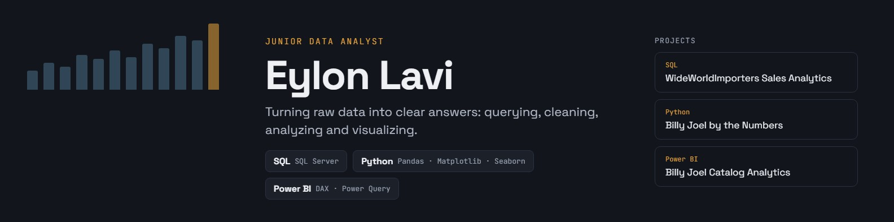
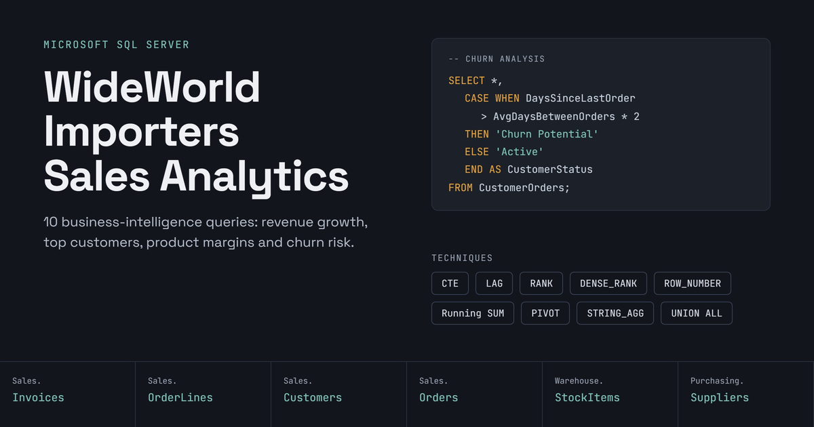
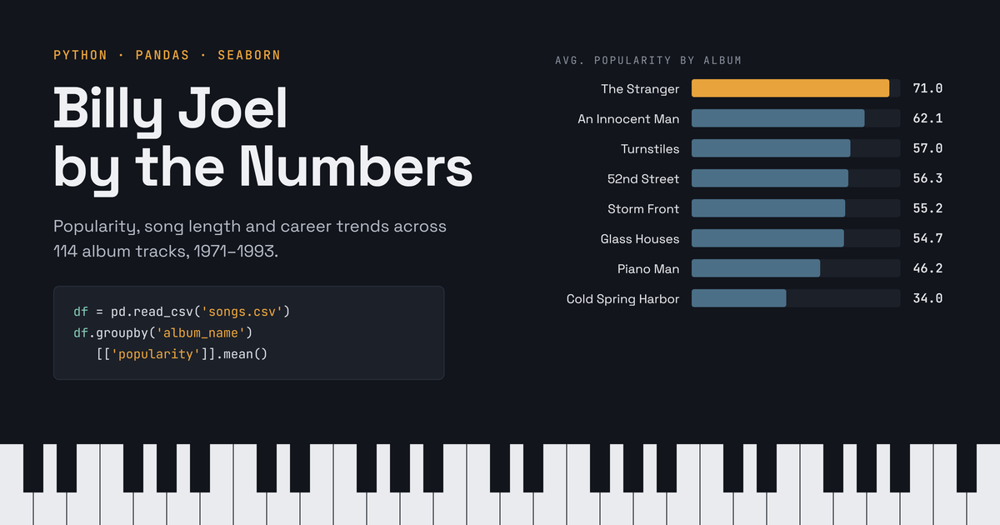
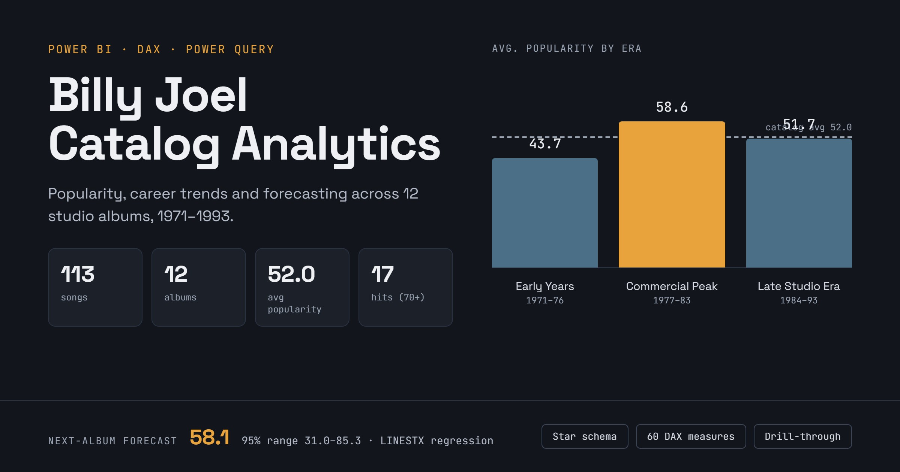

Junior Data Analyst
SQL · Power BI · Python · Excel

SQL · Power BI · Python · Excel

SQL Server

This SQL Server project analyzes the WideWorldImporters sample database through ten business-intelligence queries. It looks at sales performance over time: yearly revenue with a linear annual projection and year-over-year growth, monthly and cumulative sales with yearly grand totals, and a pivot of order counts by month and year. It also ranks customers and products, including the top 5 customers per quarter, the top 10 items by revenue, products ranked by nominal profit margin, and the top customers by total price including tax along with their geographic details. Finally, it covers supplier product catalogs, a churn analysis that flags customers whose time since their last order exceeds twice their average ordering interval, and the distribution of customers across categories. Throughout, the project uses CTEs, window functions (LAG, RANK, DENSE_RANK, ROW_NUMBER, running SUM), PIVOT, STRING_AGG, and UNION-based report formatting.
Python

This Python project analyzes Billy Joel’s catalog across 12 studio albums (1971–1993) using Pandas, Matplotlib and Seaborn. It cleans the data by removing singles, converting durations to minutes and seconds, and adding a decade column. It then looks at song popularity, song length, and how both changed across albums and decades. Five charts show the findings: a bar chart of the top 10 songs, a popularity histogram, a scatter plot of duration versus popularity, a boxplot of durations by decade, and a line chart of album popularity over time. The main insights are that The Stranger is his most popular album (average popularity of 71, with 5 of the top 10 songs), that most songs, hits included, are under 5 minutes long, with only 3 longer songs scoring above 70, and that his popularity peaked in the 1980s (an average of 54.4, compared with about 50 in the 1970s and 1990s).
Power BI

This Power BI project analyzes Billy Joel’s catalog of 113 songs across 12 studio albums (1971–1993). The data is cleaned in Power Query and modeled as a star schema with 71 DAX measures. The interactive report has nine pages: Home, Overview, Timeline, Albums, Songs, Forecast and Summary, plus an album drill-through page and an album tooltip page. It answers five research questions about career trends, where the hits come from, whether song length affects popularity, long-song outliers, and a forecast built with DAX LINESTX regression. The main findings are that popularity peaked in the Commercial Peak era (1977–1983), which holds 70% of the hits, that The Stranger is the standout album, and that neither release year nor song length explains much of a song’s popularity.